Major(s): Cognitive Science & Anthropology
Year: Senior
Pronouns: she/her
Bio: Hi, I'm Katelyn and I've been with CSSA for the past three years, starting now on my fourth! I'm from Cerritos, CA and I hate doing my laundry. I cook the same meal every day and every meal of the week. At CSSA, I am the president and do presidential things. On campus, I work at the student union. Do not come find me at work. My guilty pleasures are: sleeping early, spacing out, snacking while watching youtube, and doing my nails.
Fun Fact: I have an ASMR youtube channel.
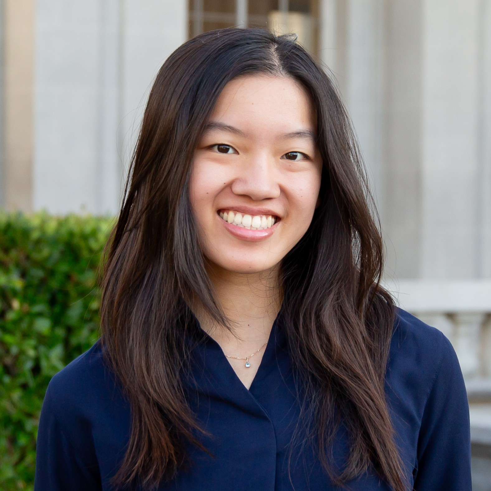
Major(s): Cognitive Science & Integrative Biology
Year: Junior
Pronouns: she/her
Bio: CSSA is such a great club because it allows you to connect with students from all different areas of study, not just cogsci.
I believe in matcha/espresso tonics, mini hydroflasks, and owning more pens than you can write with.You can find me at the Trader Joe's looking for flowers or the East Asian Library trying not to fall asleep :)
Fun Fact: I have a 692 day duolingo streak.
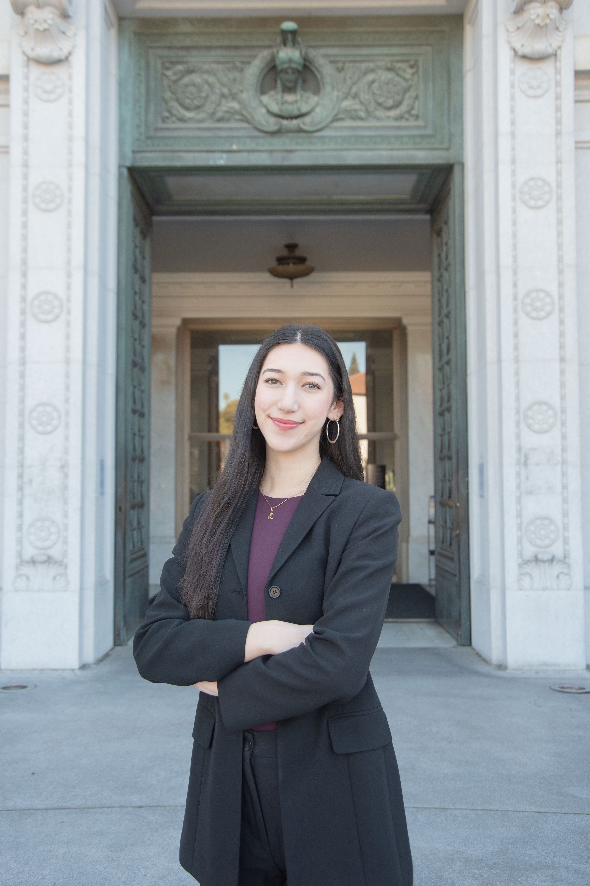
Major(s): Cognitive Science & Data Science
Year: Junior
Pronouns: she/her
Bio: Hi! My name is Katrina and I’m from Chino Hills, CA. I’ve been in CSSA for 3 years now and I study cognitive science and data science with an interest in ML/PM in consumer industries. Some of my hobbies consist of hiking, yoga, live music, cooking, and exploring new places!
Fun Fact: I can’t ride a bike :(
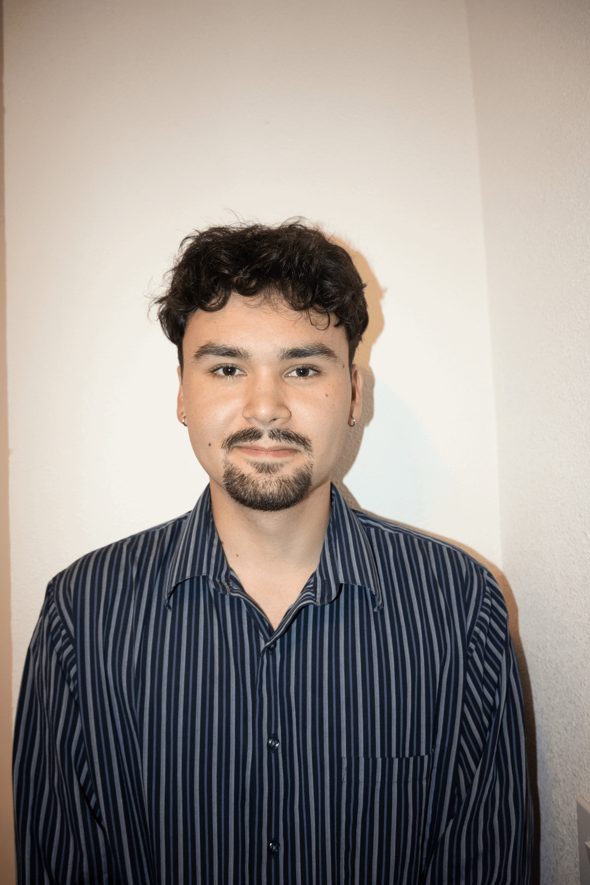
Major(s): CS & DS
Year: Senior
Pronouns: he/him
Bio: Hi, I’m Kai, a senior studying Cognitive Science and Data Science, and I’ve been part of CSSA for three years now! In my free time, you’ll find me at the gym, eating out, or playing board games with my roommates. I have been focused on AI use in educational spaces, and I’m fascinated by the intersection of the mind and technology. How do we shape it, and more importantly, how does it shape us?
Fun Fact: I’ve played every Legend of Zelda game (at least partially)
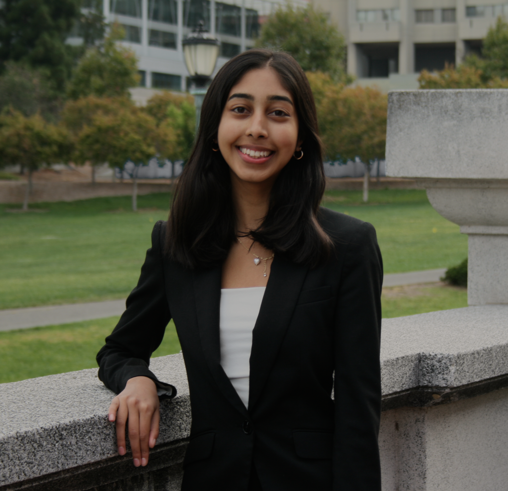
Major(s): Cognitive Science & Data Science
Year: Sophomore
Pronouns: she/her
Bio: Currently, I’m a second-year majoring in Cognitive Science and Data Science, with an interest in technology and product management. I’ve been in the club for three semesters, and am excited to continue this journey as Co-Outreach Director! In my free time, I enjoy dancing, reading, baking, watching new movies and shows, and hanging out with friends.
Fun Fact: I’m not a drinks girl (I only drink water and hot chocolate..).
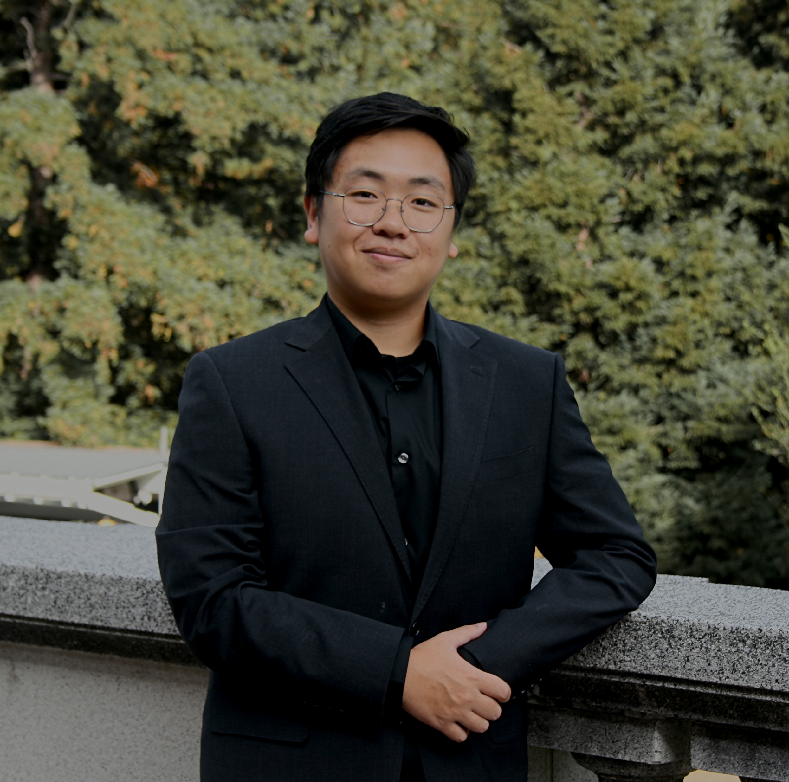
Major(s): Cognitive Science & Minor in Data Science
Year: Senior
Pronouns: he/him
Bio: Nihowdy, I’m Jeddy! I’m a 16th grader(senior) interested in language and cognition, and investigating them through brain-computer interfaces. Outside of school I enjoy exploring coffee/boba shops, nature, and music.
Fun Fact: I’ve lived in Tibet for 8 months...
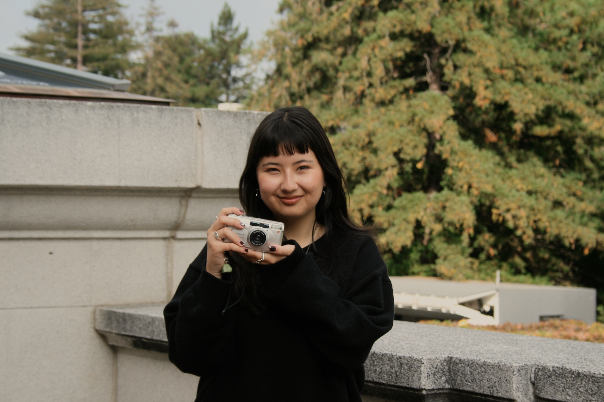
Major(s): Cognitive Science
Year: Junior
Pronouns: she/her
Bio: Hi, I’m Maxine! I am a junior majoring in cognitive science. I’m interested in leveraging cognitive neuroscience methods to better understand the mind and brain. I love reading, crafting, watching sitcoms, and being in nature!
Fun Fact: My grandma taught me how to knit. :)
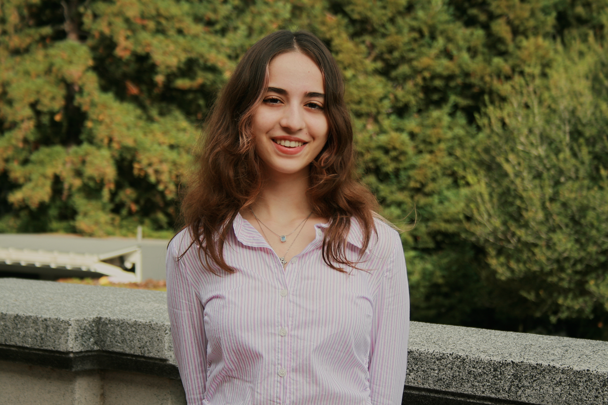
Major(s): Data Science, Psychology, and Film & Media
Year: Sophomore
Pronouns: she/her
Bio: Hii, I’m Ipek! I’m a second year triple major in Data Science, Psychology, Film & Media! I’m really passionate about education, psychology, AI research, and filmmaking! I love reading, writing, watching films & tv shows (if you couldn’t tell), nature, animals, and being busy. At CSSA, I’m the director of Prof Dev (I genuinely love doing Prof Dev stuff)!
Fun Fact: I think raccoons make the best pets :)
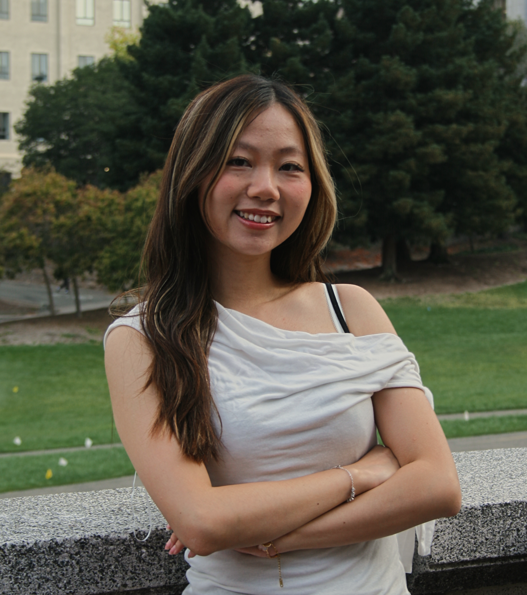
Major(s): Cognitive Science & Data Science
Year: Senior
Pronouns: she/her
Bio: Hi!! My name is Cindy Wang, and I’m a senior double majoring in Data Science and Cognitive Science. I’m especially interested in computational neuroscience, with a focus on neural networks and their connections to Large Language Models. Outside of class, I love traveling to new places, exploring different boba shops and restaurants, and documenting little snapshots of my life along the way.
Fun Fact: I love anything with mango and coconut!
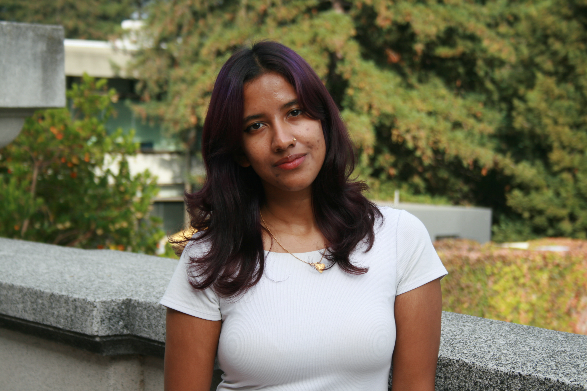
Major(s): Cognitive Science & Computer Science, Minor in Lingustics
Year: Senior
Pronouns: she/her
Bio: Hi, I’m Narah! I’m super interested in Human-Computer Interaction, user-centered technology, and creative takes on tech. Outside of academics, I love trying random hobbies, crocheting, drawing, and experimenting with coffee recipes.
Fun Fact: I love honey.. 🐝🐝
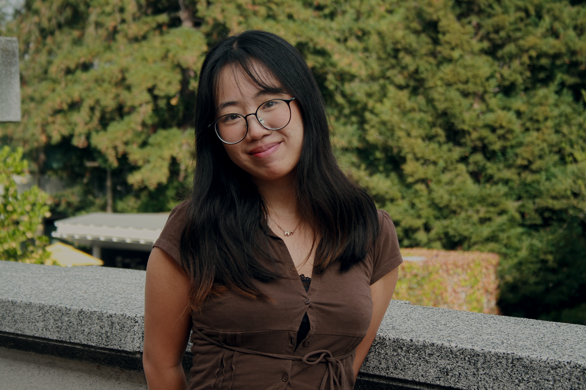
Major(s): Data Science and Film & Media
Year: Senior
Pronouns: she/her
Bio: hellooo i’m Yeonju! I am a senior majoring in data science and film & media (yes I am not a cog sci major). i am super interested in decision making process, especially what differentiates human-made decisions and machine decisions. i love food, napping, and using random stickers when i text people i love. i am the director of club marketing but learning FIGMA so please come talk to me if you know FIGMA #LETSLEARNITTOGETHER.
Fun Fact: during covid i actually worked on how to breathe with two masks on for a concert but then concert got cancelled wow.
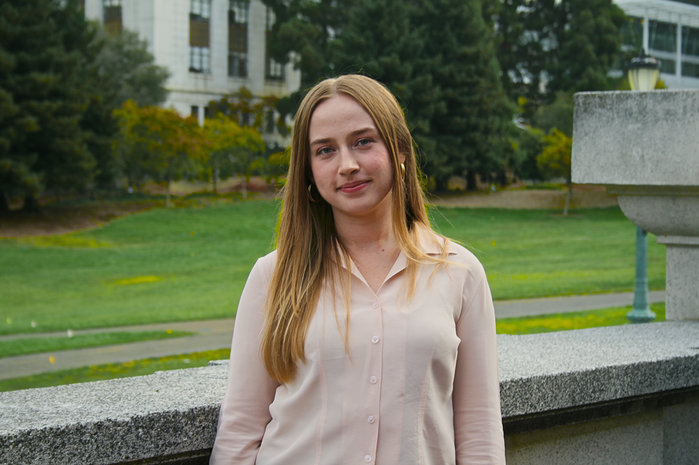
Major(s): Cognitive Science & Minor in Data Science
Year: Senior
Pronouns: she/her
Bio: Hello, I’m Kat! I am a senior studying cognitive science with a minor in data science. I am interested in project management and analytics professionally, but in my free time I love to read, hike, and explore new restaurants!
Fun Fact: I’ve read 104 books in one year (before I got to Berkeley...)
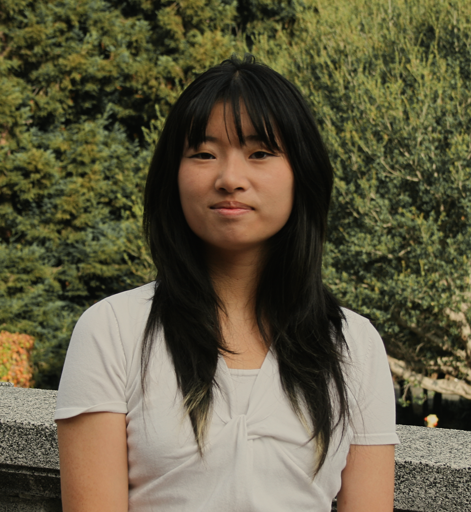
Major(s): Cognitive Science & Data Science
Year: Sophomore
Pronouns: Any pronouns
Bio: Hi, I’m Claire! I’m a second year studying Cognitive Science and Data Science, and I’m really interested in psychology, UI/UX design, and creative marketing! In my free time I love discovering new places to eat, listening to music, writing, photography, thrifting, and anything artsy.
Fun Fact: My record at all you can eat sushi is 293 pieces… (4 people but still).
© 2023 Berkeley CSSA
We are a student group acting independently of the University of California. We take full responsibility for our organization and this web site.